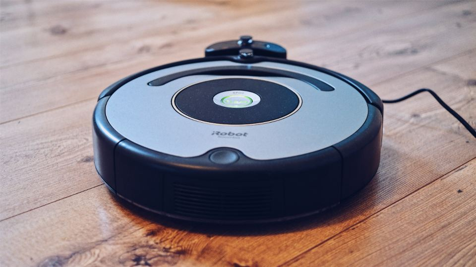
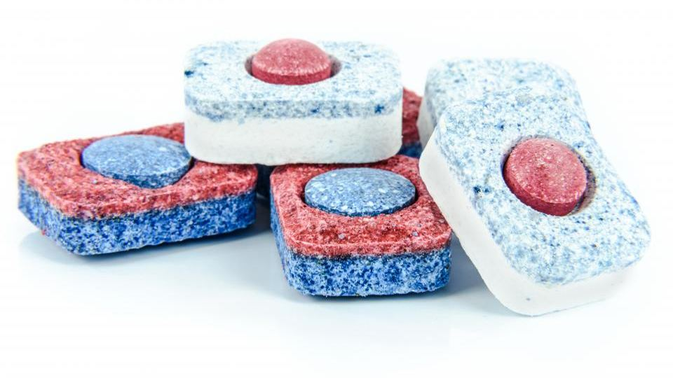

夕方に帰ってきてからの料理、床に目立ってくるほこり、食後のシンクにたまるお皿。どれも毎日のことなので、終わったと思ったらまた次の日がやってきます。
ここで言う「自動化」は、毎日同じ手順でしている家事を、道具や仕組みに任せて手を動かす回数を減らすことです。
この記事では、忙しい家庭に多い3つの困りごと「料理の下ごしらえと調理」「掃除機がけ」「皿洗い」について、今のやり方と、道具に任せる方法を順番に紹介します。
1. 料理の下ごしらえと調理を自動化する
どんな困りごとか
共働きの家庭や、家で仕事をしながら家事をこなす人にとって、毎日の料理はまとまった時間が必要な家事です。
野菜を切る、下味をつける、火加減を見ながらそばに立つ。疲れている日ほど、この流れを一から始めるのが重く感じられます。
今のやり方
多くの家庭では、買ってきた食材を毎日その場で下ごしらえし、コンロの前に立って調理しています。
煮込み料理のように時間がかかるものは、平日には作りにくくなりがちです。
自動化の方法
考え方は、「作らない日」と「そばに立たない日」を週の中に決めておくことです。
- 作らない日を決める：週に何日かは、温めるだけの宅配食や冷蔵の惣菜に任せると先に決めておきます
- 下ごしらえを任せる日を作る：切った食材と調味料がそろって届くミールキットを使うと、下ごしらえの手間を減らしやすくなります
- そばに立たない調理にする：自動調理鍋に材料を入れてスタートし、かきまぜや火加減を任せます。予約調理ができる機種なら、帰宅時間に合わせて仕上げる使い方もできます
- 冷凍庫の空きを確かめる：冷凍の宅配食をまとめて頼むなら、届く量が入るかを先に見ておきます
使う道具の例
道具は大きく分けて、宅配食（冷凍弁当・冷蔵惣菜・ミールキット）と自動調理鍋です。選ぶときは次の観点が目安になります。
- 何人分か：自動調理鍋は機種ごとに作れる量が違い、宅配食も1人向けと家族向けで内容が分かれます
- 冷凍か冷蔵か：冷凍は日持ちしやすく、冷蔵は届いてから食べきるまでの日数が短めです
- 続け方：定期便のスキップや解約の条件、送料のかかり方は、申し込む前に確かめます
自動調理鍋では、シャープの「ヘルシオ ホットクック」が、煮物・炒め物・蒸し物・低温調理の自動メニューや無水調理に対応し、自動でかきまぜるシリーズがあると公式サイトに書かれています。
パナソニックの「オートクッカー ビストロ NF-AC700」は、鍋底のかきまぜや冷凍食材をそのまま使う調理、予約調理ができると案内されています。
宅配食では、「シェフの無添つくりおき」が無添加の手作り惣菜を冷蔵で毎週届けるサービスで、メニューは週替わりのおまかせです。届いてから食べきるまでの日数に決まりがあるので、家族の予定と合わせて考えると安心です。
2. 掃除機がけを自動化する

どんな困りごとか
床のほこりや髪の毛、ペットの抜け毛は、毎日少しずつたまっていきます。
小さな子どもがいる家庭や、ペットと暮らす家庭では、こまめに掃除したいと思っても、毎日の時間を取るのは簡単ではありません。
今のやり方
多くの人は、掃除機を出してコンセントにつなぎ、部屋ごとに手でかけています。
床の物をよける手間もあるので、忙しい日はつい後回しになりがちです。
自動化の方法
ロボット掃除機に、毎日決まった時刻の掃除を任せるのが基本の形です。
- 床に物を置かない場所を作る：コード類や小物を片付ける場所を決めておくと、ロボット掃除機が動きやすくなります
- 時刻を決める：外出中や家族が起きる前など、動いても気にならない時刻をアプリでスケジュールに入れます
- 掃除しない場所を決める：入ってほしくない部屋や場所を設定できる機種なら、最初に決めておきます
- 手入れの日を決める：ゴミの処理やブラシの手入れをする日を週1回などと決めておくと、続けやすくなります
使う道具の例
道具はロボット掃除機です。選ぶときは次の観点で比べると迷いにくくなります。
- スケジュール機能：アプリなどで掃除の時刻を決められるか
- ゴミの自動収集：充電台にゴミを集める機能があると、ゴミを捨てる回数を減らしやすくなります
- 水拭き：フローリングの水拭きまで任せたいか。モップの洗浄・乾燥を充電台でするタイプもあります
アイロボットの「ルンバ Roomba Plus 515 Combo」は、吸引と水拭きができ、ゴミの自動収集や自動給水、アプリや音声での清掃スケジュール設定に対応すると公式サイトに書かれています。
エコバックスの「DEEBOT X8 PRO OMNI」も、ゴミの自動収集や水拭き、清掃の予約ができると案内されています。
3. 皿洗いを自動化する

どんな困りごとか
皿洗いは、食事のたびにやってくる家事です。
家族が多いほど量が増え、食後に疲れていると、シンクにたまったお皿を見るだけで気が重くなることもあります。
今のやり方
多くの家庭では、毎食後にスポンジと洗剤で手洗いし、水切りかごで乾かしています。
油汚れの多い鍋やフライパンは、洗うのに時間がかかりがちです。
自動化の方法
食後の作業を「食洗機に入れてボタンを押す」までにするのが目標です。
- 置き場所を決める：卓上型ならシンクのそばの置き場所と、給水の方法を確かめます
- 入れ方を決める：毎回同じ位置に同じ食器を入れると決めておくと、並べる手間が減りやすくなります
- 食洗機に向く食器にそろえる：食洗機で洗えない食器もあるので、普段使いの食器を少しずつ対応品にしていく方法があります
- 回すタイミングを決める：1日1回、夕食後にまとめて回すなど、家族で決めておくと続けやすくなります
ポイント
食洗機を置けるかどうかは、置き場所の広さと給水・排水の条件で決まります。賃貸住宅では、工事が必要かどうかを先に確かめておくと安心です。
使う道具の例
道具は食洗機で、卓上型とビルトイン型があります。選ぶときは次の観点が目安になります。
- 工事が必要か：卓上型の中には、水をタンクに入れるので分岐水栓の工事がいらないものがあります
- 一度に洗える量：家族の人数に合うかを確かめます
- 買うか、借りるか：メーカーの定額利用サービスで使える機種もあります
パナソニックの卓上型「NP-TSP2」はタンク式で、2人分の食器と調理器具を一度に洗えると公式サイトに書かれています。公式の定額利用サービスでは、1〜48か月目が月額1,980円（税込）です（2026年10月時点・公式サイト）。途中で解約すると手数料がかかる期間があるので、最新の条件は公式サイトでご確認ください。
キッチンに組み込むビルトイン型は、リンナイやパナソニックなどから出ていて、取り付けや取り替えには工事が必要です。
自動化を始める前に気をつけたいこと
- 定期便の条件：宅配食の定期便は、スキップや解約ができる時期が決まっていることがあります。始める前に、止め方を確かめておきます
- 置き場所と電源：自動調理鍋や食洗機、ロボット掃除機の充電台は、置き場所とコンセントの位置を先に決めておきます
- 安全のための確認：自動調理鍋の予約調理や、留守中に動かす家電は、取扱説明書の注意事項を守って使います
注意
料金やプラン、使える機能は変わることがあります。この記事の内容は2026年10月時点で公式サイトに書かれていた内容です。申し込む前に、最新の内容を公式サイトでご確認ください。
この記事に関連する商品（楽天市場）
 ロボット掃除機 DEEBOT T80 OMNI エコバックス 公式 ECOVACS お掃除ロボッ…エコバックスジャパン公式 ストア楽天市場で価格を見る
ロボット掃除機 DEEBOT T80 OMNI エコバックス 公式 ECOVACS お掃除ロボッ…エコバックスジャパン公式 ストア楽天市場で価格を見る SAMKYO 工事不要 食洗機 1~3人用 食器洗い乾燥機 18点 乾燥のみ機能対応 熱風送風乾…SAMKYO家電専門店楽天市場で価格を見る
SAMKYO 工事不要 食洗機 1~3人用 食器洗い乾燥機 18点 乾燥のみ機能対応 熱風送風乾…SAMKYO家電専門店楽天市場で価格を見る
※価格・在庫・送料は変わることがあります。購入前に楽天市場の商品ページでご確認ください。
よくある質問
宅配食と自動調理鍋は、どちらから始めるのがよいですか？
料理の時間そのものを減らしたい方は宅配食、自分で作る料理を残しつつそばに立つ時間を減らしたい方は自動調理鍋が向いています。宅配食はお試しのセットがあるサービスもあるので、まず短い期間で試す方法もあります。
ロボット掃除機があれば、掃除機は手放せますか？
床の広い部分は任せやすくなりますが、階段や家具のすき間、ソファの上などは届かないことがあります。普段の掃除はロボット掃除機に任せ、ときどき手でかける形にすると無理がありません。
賃貸住宅でも食洗機は使えますか？
タンク式の卓上型なら、分岐水栓の工事をせずに使える機種があります。ただし置き場所や排水の条件があるので、購入や契約の前に公式サイトで設置条件を確かめてください。
3つとも一度にそろえるべきですか？
一度にそろえると費用も置き場所も負担になるので、いちばん時間を取られている家事から1つずつ始めるのがおすすめです。
まとめ
この記事のポイント
- 料理は、作らない日と自動調理鍋に任せる日を決め、宅配食やミールキットで下ごしらえと調理の回数を減らす
- 掃除機がけは、ロボット掃除機に毎日決まった時刻の掃除を任せ、床に物を置かない場所を作る
- 皿洗いは、食洗機に入れてボタンを押すまでを食後の作業にし、置き場所と工事の有無を先に確かめる
今日ひとつだけ試すなら、今週の夕食のうち1日を「作らない日」と決めて、宅配食のお試しを調べてみるのが始めやすい一歩です。